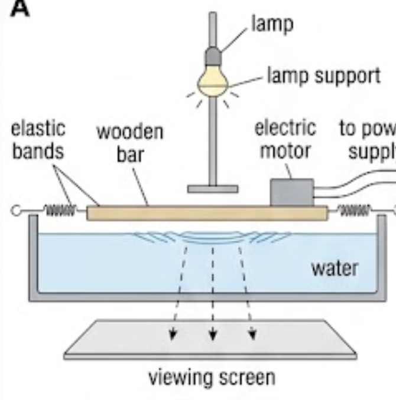
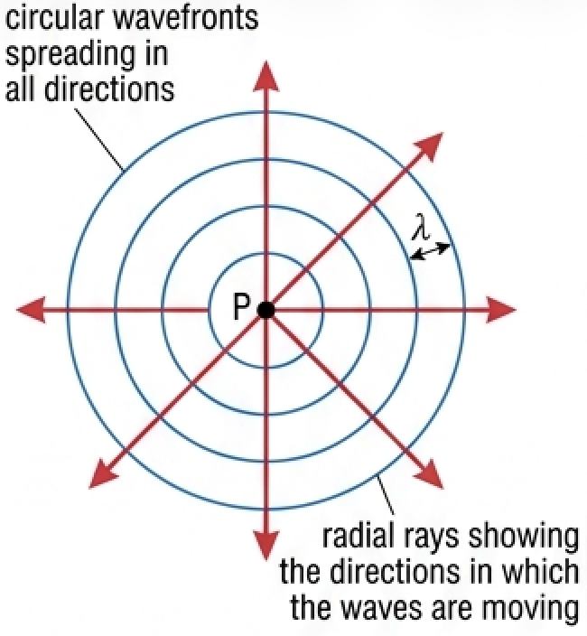
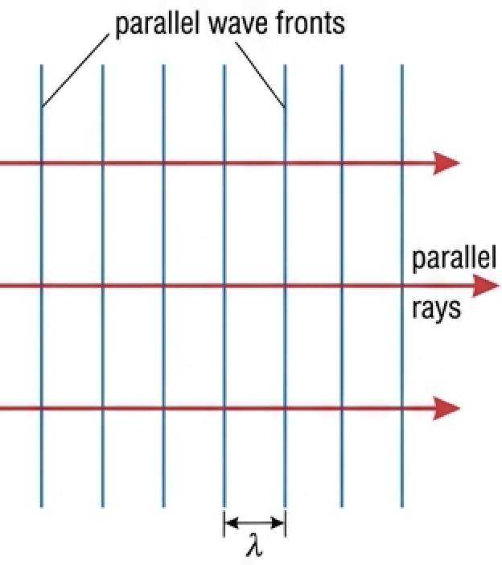
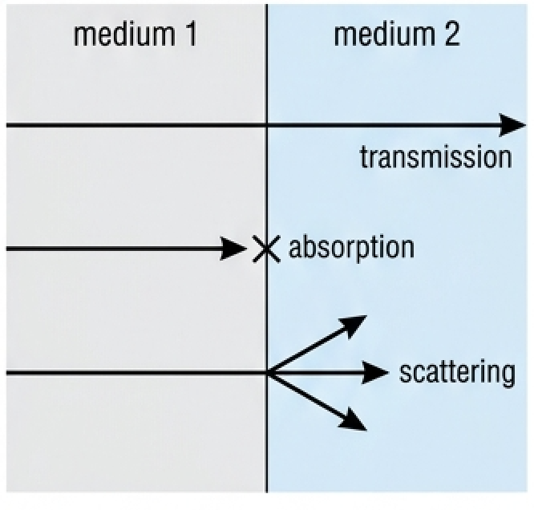
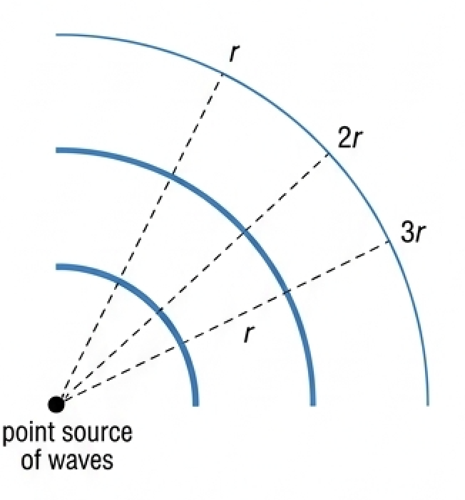
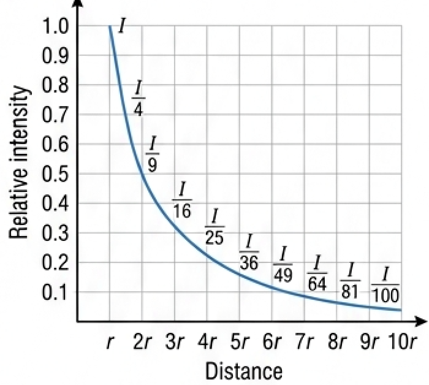
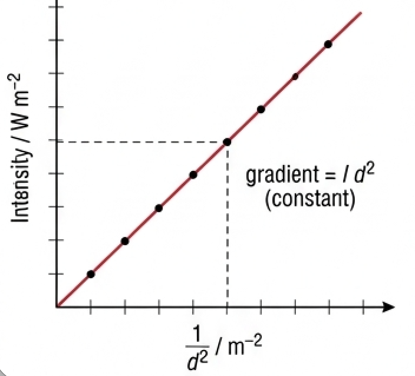
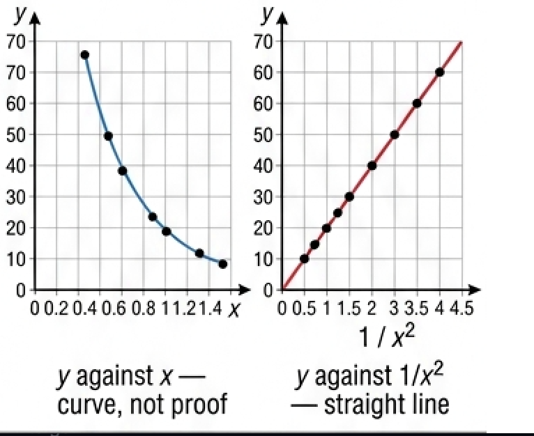

🎯 Hook – the ripple tank
A ripple tank is a tank of shallow water used for investigating wave properties. Small waves (ripples) can be made by touching the surface of shallow water at a point, or with a wooden bar. Usually a motor is attached to the bar to make it vibrate and produce continuous parallel waves at various frequencies. The light above enables the moving waves to be seen on the screen below the tank, and a stroboscope is often used to make the waves appear stationary. The bright lines you see on the screen are the positions of the wave crests.

📐 Wavefronts and rays
Syllabus content: waves travelling in two and three dimensions can be described through the concepts of wavefronts and rays.
A wavefront is a line joining neighbouring points moving in phase with each other (for example, crests). Wavefronts are one wavelength apart and perpendicular to the rays that represent them.
Regular disturbances of the water at a point P send waves out with equal speed in all directions, so in two dimensions the pattern is circular. Wave speed depends on the depth of the water, which is usually constant if the tank is horizontal.

A ray is a line showing the direction in which wavefronts are moving and energy is transferred. Rays and wavefronts are always perpendicular to each other. The other common possibility is parallel wavefronts, made in a ripple tank with a wooden bar; their movement is represented by parallel rays.

In three dimensions, waves spreading from a point with constant speed are represented by spherical wavefronts. If the source is a very long way away compared with the wavelength, the wavefronts will be (almost) straight and parallel: such waves are plane waves — waves travelling in three dimensions with parallel wavefronts, which can be represented by parallel rays. Light from a distant point is a common example; the Sun is an obvious source of plane waves.
🌫️ Transmission, absorption and scattering
Syllabus content: wave behaviour at boundaries in terms of transmission.
The process in which waves are able to travel through a medium is described as wave transmission — passage through a medium without absorption or scattering. For example, light and sound can be transmitted through air and water.
During transmission there is often absorption of energy: some or all of the wave energy is transferred to internal energy within the medium. Waves may also be randomly misdirected by interactions with irregularities within the medium; this is called scattering. In reality, all three processes can occur with the same waves.

A medium through which light can be transmitted, and through which we can see clearly, is described as being transparent. A medium through which light cannot be transmitted is described as opaque — unable to transmit light (or other forms of energy).
📉 Wave power, intensity and amplitude
As waves spread out, and/or their energy is dissipated, the power that they transfer is reduced. We usually describe this as a reduction of wave intensity:
Speaking generally, the energy transferred by a wave is proportional to its amplitude squared (Topic C.2). More precisely:
Spreading from a point without absorption. There are reasons why waves lose energy during transmission through a medium, but if the waves spread out from a point source (that is, they are not plane waves), their intensity will decrease for that reason alone, without any absorption.
In two dimensions (surface waves): as surface waves spread away from a point source the wavefronts extend over greater and greater lengths. If a circular wavefront increases its distance from its centre from \(r\) to \(2r\), its circumference increases from \(2\pi r\) to \(4\pi r\). The same amount of energy is spread over a greater length, so the wave amplitude decreases. Far from the source the wavefronts become almost parallel, so no loss of energy / power may be noticeable.

In three dimensions (such as light and sound): the intensity of any waves spreading radially in three dimensions, without absorption, from a point source follows an inverse square relationship:
Again, if the waves are a great distance from their point source the wavefronts become almost parallel / plane waves, so no loss of energy or power due to spreading may be noticeable.
📈 Graphs every examiner uses
| Graph type | Axes (X, Y) | Shape | What to read |
|---|---|---|---|
| Inverse square curve | X: distance (r, 2r, 3r … 10r); Y: relative intensity 0–1.0 | Falling curve, steep then flattening, never touching the axis | Ordinates \(I\), \(I/4\), \(I/9\), \(I/16\) … \(I/100\) at \(r, 2r, 3r\) … \(10r\) |
| Linearised inverse square | X: \(1/d^2\); Y: intensity | Straight line through the origin | Gradient \(= I d^2\) (constant) — proof of the inverse square relationship |
| Intensity–amplitude | X: amplitude \(x_0\); Y: intensity | Curve of increasing gradient (parabolic) | Doubling \(x_0\) quadruples \(I\) |
| Amplitude–distance (2-D) | X: distance from point source; Y: amplitude | Falling curve, tending to a constant far from the source | Same energy spread over a longer wavefront; almost parallel wavefronts far away |


✍️ Worked example – Tool 3: is the relationship an inverse square?
Check the data shown in Table C3.1 to determine if there is an inverse square relationship between \(x\) and \(y\), (i) numerically and (ii) graphically.
| x | y | y x² |
|---|---|---|
| 1.34 | 9 | 16.2 |
| 0.96 | 17 | 15.7 |
| 0.81 | 24 | 15.7 |
| 0.70 | 32 | 15.7 |
| 0.64 | 38 | 15.6 |
| 0.59 | 45 | 15.7 |
| 0.55 | 52 | 15.7 |
| 0.52 | 58 | 15.7 |
| 0.49 | 66 | 15.8 |
\(32 \times 0.70^2 = 15.7\)
\(66 \times 0.49^2 = 15.8\)
so \(y = k \times (1/x^2)\), gradient \(k \approx 15.7\)

🌍 Real-world: the atmosphere and a blue sky
Sunlight reaching the top of the atmosphere has intensity 1360 W m⁻² and is about 40% visible, 50% infrared and 10% ultraviolet. By the surface the intensity is about 1000 W m⁻², in the proportions 44% visible, 53% infrared and 3% ultraviolet — the atmosphere transmits most of the visible light but absorbs or scatters the great majority of the ultraviolet. Scattering also explains why the sky is blue: shorter wavelengths are scattered far more strongly by air molecules, so blue light reaches your eye from all directions in the sky.
🚀 HL Extension – why 2-D and 3-D differ
Spreading dilutes energy over the wavefront. In two dimensions the wavefront is a circle of circumference \(2\pi r\), so \(I \propto 1/r\); in three dimensions it is a sphere of area \(4\pi r^2\), so \(I \propto 1/r^2\). Since \(I \propto x_0^{2}\), amplitude falls as \(1/\sqrt{r}\) on a water surface but as \(1/r\) for light or sound.
Challenge: a point source of sound gives 0.44 W m⁻² at 2.10 m. At what distance is the amplitude halved? (Answer: amplitude halves when \(I\) falls to one quarter, so at \(2 \times 2.10 = 4.20\) m)
⚠️ Trap corner – common mistakes
| Misconception | Correct view |
|---|---|
| "\(A\) is the amplitude in \(I = P/A\)" | \(A\) is the area. Amplitude is written \(x_0\), and \(I \propto x_0^{2}\) |
| Rays are drawn parallel to the wavefronts | Rays are always perpendicular to the wavefronts, and show the direction of energy transfer |
| Wavefronts and rays are drawn on the same diagram | They are two descriptions of the same waves and are not normally used at the same time |
| Any drop in intensity means energy has been absorbed | Waves from a point source lose intensity by spreading alone, with no absorption at all |
| Scattering and absorption are the same thing | Absorption transfers wave energy to internal energy of the medium; scattering randomly misdirects the waves |
| The inverse square law applies to every source | It applies to a point source radiating in three dimensions. Plane waves show no spreading loss |
Complete the statements:
✓ The frequency is set by the vibrating bar and is unchanged, so with \(v = f\lambda\) a smaller \(v\) gives a smaller \(\lambda\).
✓ The wavefronts stay parallel and perpendicular to the direction of travel, but become closer together.
(b) ✓ The depth now varies across the tank, so the speed varies: the wavefronts travel faster in the deeper part and slower in the shallower part.
✓ The circular pattern is distorted — the spacing is larger on the deep side and smaller on the shallow side, and the fronts are no longer concentric circles (the rays bend towards the shallow region).
✓ Only a source a very long way away compared with the wavelength gives (almost) plane wavefronts — spherical fronts would still be noticeably curved.
(b) ✓ Five parallel rays drawn left of the lens, perpendicular to the incoming wavefronts.
✓ After the lens the rays converge to a single point (the focal point) on the axis; the central ray passes straight through.
(c) ✓ Refraction (the lens refracts the light; the effect on the rays is convergence).
✓ Parts of a wavefront in deeper water travel faster than parts in shallower water, so the wavefronts turn (refract) and become more nearly parallel to the shoreline.
✓ Diffraction around headlands, rocks or through gaps also changes the direction and spacing of the wavefronts.
✓ \(P = IA = 780 \times 0.40\)
✓ \(P = 312\ \text{W}\), about \(3.1 \times 10^2\ \text{W}\)
(b) ✓ The Sun's altitude changes, so the radiation is no longer perpendicular to the panel: the same power is spread over a larger effective area, reducing the intensity received (and the path through the atmosphere lengthens, so more energy is absorbed and scattered; cloud also varies).
✓ New distance \(d_2 = 1.80 - 0.53 = 1.27\ \text{m}\)
✓ \(I_2/I_1 = (1.80/1.27)^2\)
✓ \(= 1.42^2 = 2.0\), so the intensity doubles.
✓ Concentrating the power into a horizontal beam gives a greater intensity at the phones for the same emitted power — longer range, weaker transmitter, less interference with other cells.
(b) ✓ The tall, flat panel shape: the aerial is many wavelengths long in the vertical direction.
✓ A long vertical aperture diffracts very little vertically, so the beam is narrow in the vertical plane and wide horizontally.
✓ Surface: visible \(0.44 \times 1000 = 440\); infrared \(0.53 \times 1000 = 530\); ultraviolet \(0.03 \times 1000 = 30\).
(a) ✓ visible \(440/544 \approx 81\%\) transmitted
✓ infrared \(530/680 \approx 78\%\) transmitted
✓ ultraviolet \(30/136 \approx 22\%\) transmitted
(b) ✓ absorbed / scattered: visible about \(19\%\), infrared about \(22\%\), ultraviolet about \(78\%\).
✓ This scattering is much stronger for shorter wavelengths (Rayleigh scattering, \(\propto 1/\lambda^4\)), so blue is scattered far more than red.
✓ Scattered blue light arrives at the observer from all directions in the sky, so the sky looks blue; looking directly towards a low Sun, the remaining transmitted light is reddened.
✓ \(P = IA = 0.010 \times 4.8 \times 10^{-5}\)
✓ \(P = 4.8 \times 10^{-7}\ \text{W}\)
(b) ✓ \(I \propto 1/d^2\), so \(d_2 = d_1\sqrt{I_1/I_2}\)
✓ \(d_2 = 2.10\sqrt{0.44/0.100}\)
✓ \(d_2 \approx 4.4\ \text{m}\)
(c) ✓ Assumption 1: the loudspeaker behaves as a point source radiating equally in all directions. ✓ Assumption 2: no energy is absorbed or scattered on the way (and no reflected sound adds to the intensity).
✓ Discussion: both are only roughly reasonable — a loudspeaker is directional and forms a beam, air absorbs high frequencies, and reflections from the ground, walls and crowd add extra intensity, so the real distance needed would be larger.